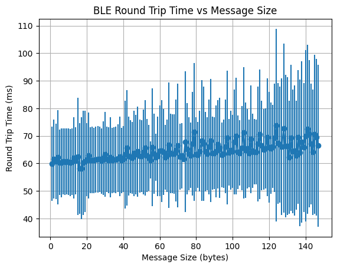
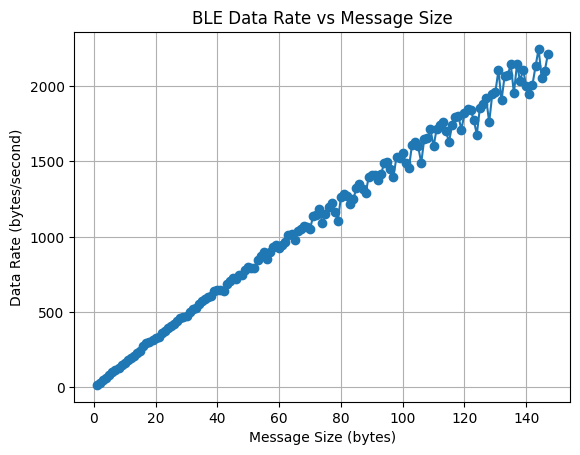

5000-Level Task
Data Rate Versus Message Size
To test how message size affects data transfer rate, I sent 100 messages of varying sizes from 1 Byte to 147 Bytes. The maximum size we can send is 147 Bytes
since the maximum string size we can send over is 150 Bytes, and we have to reserve 3 Bytes for overhead. The command used to send the messages is "TIMED_ECHO" which echos back
the sent string without any additional text. The time taken between sending and recieving the message is recorded to calculate the data transfer rate via a notification handler.
For each message size from 1 to 147 Bytes, I sent 100 messages and recorded the response times.
The results and code snippets are shown in the plot below.
case TIMED_ECHO:
{
// Echo's back to the python notebook without printing'
char char_arr[MAX_MSG_SIZE];
// Extract the next value from the command string as a character array
success = robot_cmd.get_next_value(char_arr);
if (!success)
return;
tx_estring_value.clear();
tx_estring_value.append(char_arr);
tx_characteristic_string.writeValue(tx_estring_value.c_str());
break;
}
respTimes = []
sentTime = 0
mesgCount = 0
def notification_handler(characteristic, data):
global responseInFlight, mesgCount
mesgCount += 1
respTimes.append(time.time() - sentTime)
ble.start_notify(ble.uuid['RX_STRING'], notification_handler)
respMap = {}
for i in range(1, 148):
testStr = 'a'*i
respTimes = []
mesgCount = 0
# send 100 messages
numMsg = 100
for j in range(numMsg):
responseInFlight = True
sentTime = time.time()
ble.send_command(CMD.TIMED_ECHO, testStr)
ble.sleep(0.1) # give the controller time to process incoming messages
respMap[i] = np.array(respTimes)


The plot on the left shows the average round trip time distributions for different message sizes with error bars for standard deviation, while the plot on the right shows the data rate (Bytes/second) versus message size.
From these plots we can see that as the message size increases, the average response time also increases linearly, albeit slightly. This is expected as larger messages take longer to transmit over Bluetooth.
However, the increase in response time is relatively small compared to the increase in message size. As a result, the data rate (Bytes/second) also increases with message size.
For example, the data rate for 5 byte messages is 82.79 Bytes/second, while for 147 byte messages it is 1,820.11 Bytes/second.
The variability in response times also increases with message size, likely due to the increased likelihood of interference and retransmissions for larger packets.
Smaller messages seem to introduce a large amount of overhead since it has to send a packet over bluetooth for each message, leading to lower data rates.
Overall, these results suggest that for applications requiring high data throughput, it is more efficient to send larger messages rather than many small messages since each large message has the same overhead but sends more real data.